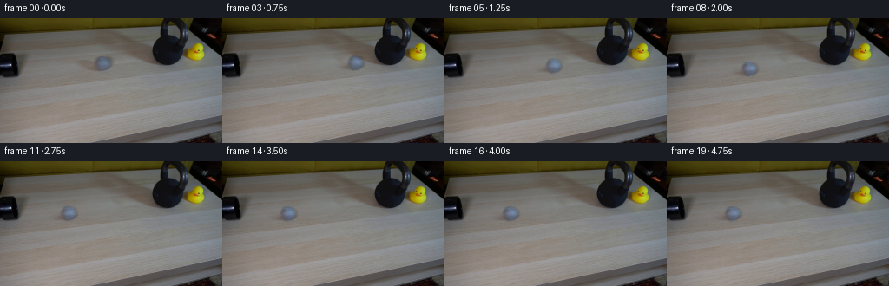
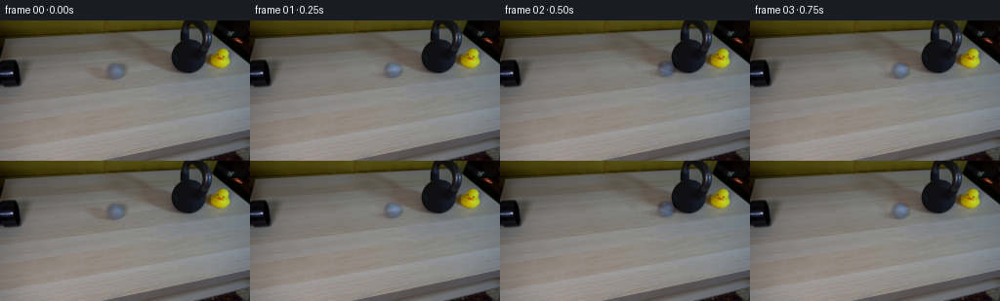
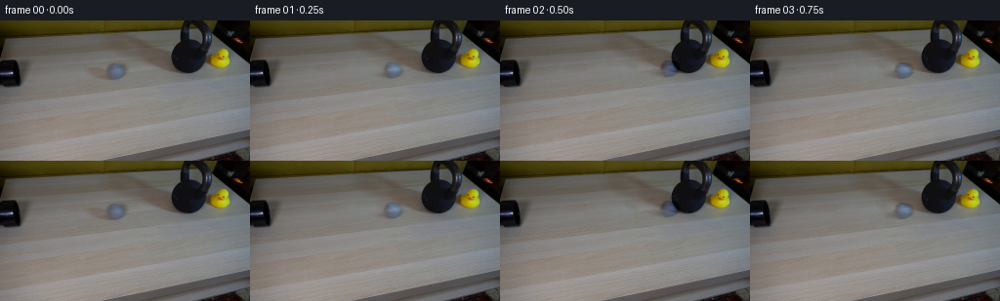
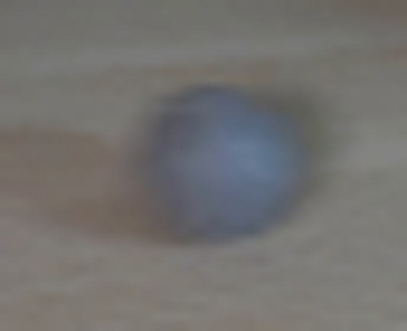
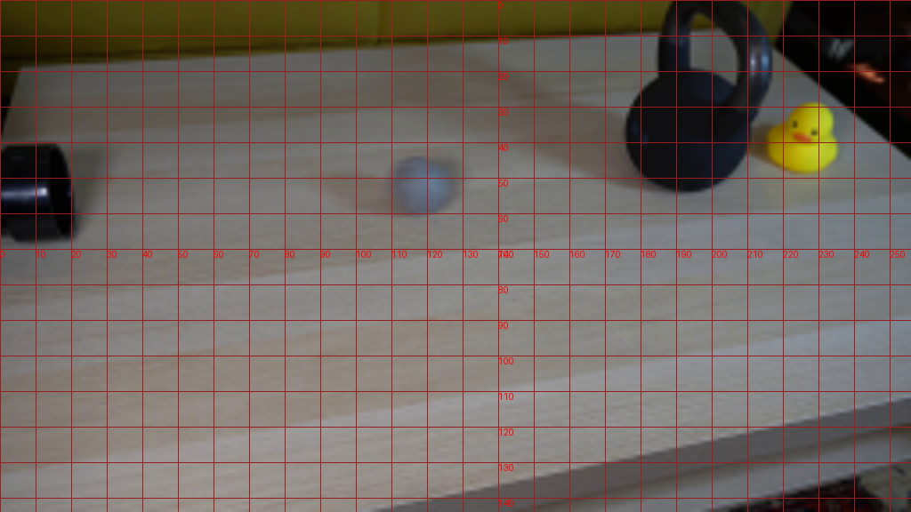
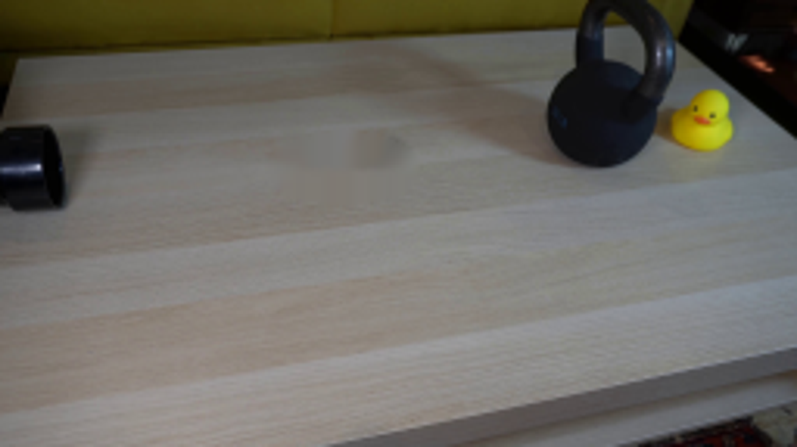
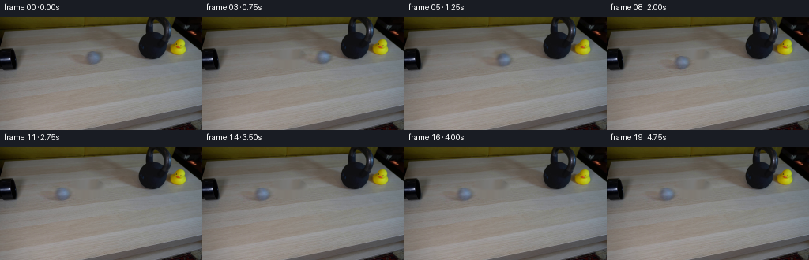
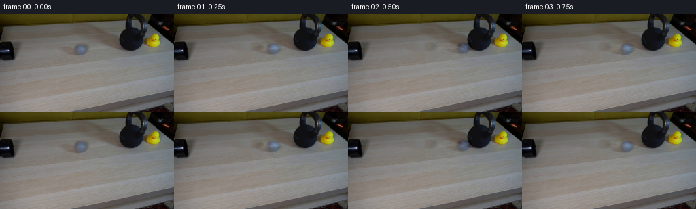
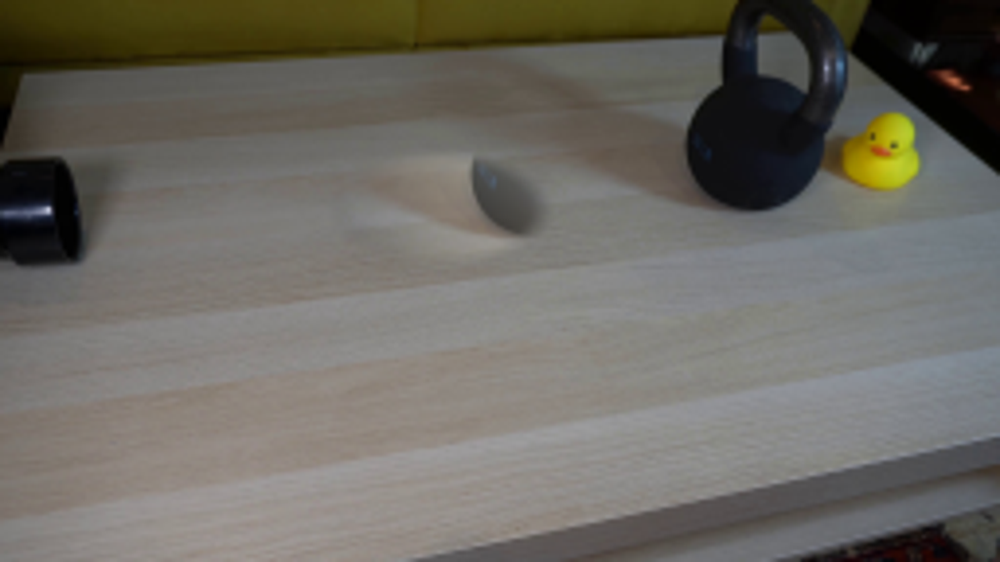
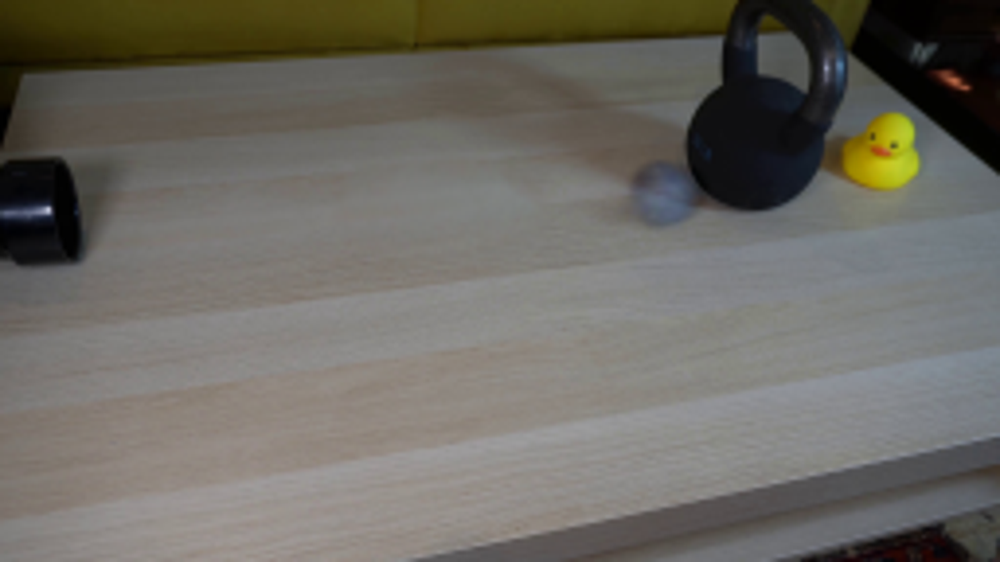

CODING AGENTS AS PIXEL WORLD MODELS
traex/GPT-6.1-Sol · 0196
点击播放 · 原生 RGB 像素
逐轮保存的候选
回放视频、检查图与代码变化。
每份候选均可单独播放。实际图片检查记录在下方工具轨迹中。
候选 01播放与检查图
点击播放 · 原生 RGB 像素

展开代码变化
--- 上一保存版本
+++ 本次保存版本
@@ -0,0 +1,67 @@
+from pathlib import Path
+import numpy as np
+import cv2
+from PIL import Image
+from artifact_io import save
+
+ROOT = Path(__file__).resolve().parent
+H, W = 144, 256
+source = np.asarray(Image.open(ROOT / 'first_frame.png').convert('RGB'))
+yy, xx = np.mgrid[:H, :W].astype(np.float32)
+
+# Reconstruct only the tabletop hidden by the original moving ball and its shadow.
+removed = ((((xx - 110.0) / 25.0) ** 2 + ((yy - 53.8) / 12.0) ** 2) < 1)
+background = cv2.inpaint(source, removed.astype(np.uint8) * 255, 5, cv2.INPAINT_NS).astype(np.float32)
+# Keep the photographed sphere, including its soft edge and diffuse contact shadow.
+ball_difference = source.astype(np.float32) - background
+ball_difference *= removed[..., None]
+
+# A light, resilient ball strikes a massive, effectively fixed kettlebell. The
+# already-visible ball is travelling fast in frame zero. It returns with a small
+# sideways deflection and loses rolling energy to the wooden surface.
+x0, y0 = 118.8, 51.7
+impact_x = 171.7
+incoming_speed = 112.0
+incoming_drag = 8.0
+impact_t = (incoming_speed - np.sqrt(incoming_speed**2 - 2*incoming_drag*(impact_x-x0))) / incoming_drag
+impact_y = y0 - 0.052 * (impact_x-x0)
+return_speed = 69.0
+rolling_drag = 25.0
+stop_t = return_speed / rolling_drag
+
+
+def position(t):
+ if t <= impact_t:
+ travel = incoming_speed*t - 0.5*incoming_drag*t*t
+ return x0 + travel, y0 - 0.052*travel
+ dt = min(t-impact_t, stop_t)
+ travel = return_speed*dt - 0.5*rolling_drag*dt*dt
+ return impact_x-travel, impact_y+0.115*travel
+
+
+def photographed_ball(t):
+ x,y = position(t)
+ # A very short camera exposure, rather than frame-length motion trails.
+ exposure = 0.006
+ samples = [t - exposure*0.5, t, t + exposure*0.5]
+ delta = np.zeros_like(background)
+ for ts in samples:
+ bx,by = position(max(0.0,ts))
+ M = np.array([[1, 0, bx-x0], [0, 1, by-y0]], dtype=np.float32)
+ delta += cv2.warpAffine(ball_difference, M, (W,H), flags=cv2.INTER_LINEAR,
+ borderMode=cv2.BORDER_CONSTANT, borderValue=(0,0,0)) / len(samples)
+ result = background + delta
+ # Faint migrating felt variation conveys rolling while the photographed
+ # lighting and the original silhouette remain constant.
+ rx=(xx-x)/8.0
+ ry=(yy-y)/7.8
+ rho=rx*rx+ry*ry
+ inner=np.clip((0.76-rho)*4,0,1)
+ angle=(x-x0)/8.0
+ felt = (np.sin(9*rx+2.6*np.cos(angle)+1.4*np.sin(4*ry-angle)) *
+ np.sin(6*ry+2*np.sin(angle))) * 0.65 * inner
+ result += felt[...,None]
+ return np.clip(np.rint(result),0,255).astype(np.uint8)
+
+frames = np.stack([source.copy()] + [photographed_ball(i/4.0) for i in range(1,20)])
+save(frames, ROOT)
候选 02播放与检查图
点击播放 · 原生 RGB 像素


展开代码变化
--- 上一保存版本 +++ 本次保存版本 @@ -11,10 +11,25 @@ # Reconstruct only the tabletop hidden by the original moving ball and its shadow. removed = ((((xx - 110.0) / 25.0) ** 2 + ((yy - 53.8) / 12.0) ** 2) < 1) -background = cv2.inpaint(source, removed.astype(np.uint8) * 255, 5, cv2.INPAINT_NS).astype(np.float32) +under_ball = cv2.inpaint(source, removed.astype(np.uint8) * 255, 5, cv2.INPAINT_NS).astype(np.float32) +# Continue the photographed wood grain from a nearby unobstructed part of the +# same plank, matching its broad illumination to the boundary of the repair. +repair_radius = ((xx-112)/24)**2 + ((yy-53)/12)**2 +patch = cv2.remap(source.astype(np.float32), xx-43, yy+43*.13, + cv2.INTER_LINEAR, borderMode=cv2.BORDER_REFLECT) +ring = (repair_radius > 1.15) & (repair_radius < 2.1) & (xx > 80) & (xx < 141) +design = np.stack([np.ones_like(xx), xx-112, yy-53], axis=-1) +correction = np.linalg.lstsq(design[ring], (source.astype(np.float32)-patch)[ring], rcond=None)[0] +patch += design @ correction +blend = cv2.GaussianBlur(np.clip((1.5-repair_radius)/.55, 0, 1), (0,0), .8) +background = source*(1-blend[...,None]) + patch*blend[...,None] # Keep the photographed sphere, including its soft edge and diffuse contact shadow. -ball_difference = source.astype(np.float32) - background -ball_difference *= removed[..., None] +ball_difference = source.astype(np.float32) - under_ball +body_radius = np.sqrt(((xx-118.8)/1.04)**2 + (yy-52.1)**2) +body_mask = np.clip((11.3-body_radius)/2.5, 0, 1) +shadow_mask = np.exp(-.5*(((xx-109)/8)**2 + ((yy-56)/3.4)**2)) +sprite_mask = np.maximum(body_mask, shadow_mask) * removed +ball_difference *= sprite_mask[..., None] # A light, resilient ball strikes a massive, effectively fixed kettlebell. The # already-visible ball is travelling fast in frame zero. It returns with a small
候选 03播放与检查图
点击播放 · 原生 RGB 像素

展开代码变化
--- 上一保存版本 +++ 本次保存版本 @@ -35,7 +35,7 @@ # already-visible ball is travelling fast in frame zero. It returns with a small # sideways deflection and loses rolling energy to the wooden surface. x0, y0 = 118.8, 51.7 -impact_x = 171.7 +impact_x = 173.8 incoming_speed = 112.0 incoming_drag = 8.0 impact_t = (incoming_speed - np.sqrt(incoming_speed**2 - 2*incoming_drag*(impact_x-x0))) / incoming_drag
可观测工具轨迹
实际执行的命令与返回图片。
命令 1exit 0
/bin/bash -lc 'ls -la && cat prompt.txt && cat GENERATION_RULES.md'
命令 2exit 0
/bin/bash -lc "cat artifact_io.py && python - <<'PY'
from PIL import Image
im=Image.open('first_frame.png'); print(im.size)
im.resize((1024,576)).save('.tmp/first_large.png')
PY"命令 3exit 0
/bin/bash -lc "python - <<'PY'
import cv2, numpy as np
from PIL import Image
im=np.array(Image.open('first_frame.png'))
Image.fromarray(im[35:70,95:138]).resize((688,560)).save('.tmp/ball.png')
print('cv2',cv2.__version__)
PY"命令 4exit 0
/bin/bash -lc "python - <<'PY'
from PIL import Image,ImageDraw
im=Image.open('first_frame.png').resize((1024,576))
d=ImageDraw.Draw(im)
for x in range(0,256,10):
d.line((x*4,0,x*4,576), fill=(160,30,30),width=1); d.text((x*4,280),str(x),fill='red')
for y in range(0,144,10):
d.line((0,y*4,1024,y*4),fill=(150,30,30),width=1);d.text((560,y*4),str(y),fill='red')
im.save('.tmp/grid.png')
PY"命令 5exit 0
/bin/bash -lc "cat > .tmp/test_bg.py <<'PY'
import cv2, numpy as np
from PIL import Image
im=np.asarray(Image.open('first_frame.png')).astype(np.uint8)
h,w=im.shape[:2]
y,x=np.mgrid[:h,:w]
# The ball and its soft leftward cast shadow.
roi=(((x-117)/17)**2+((y-53)/11)**2<1)
mask=(roi*255).astype(np.uint8)
for alg,label in [(cv2.INPAINT_TELEA,'telea'),(cv2.INPAINT_NS,'ns')]:
out=cv2.inpaint(im,mask,4,alg)
Image.fromarray(out).resize((1024,576)).save('.tmp/bg_'+label+'.png')
np.save('.tmp/bg_'+label+'.npy',out)
PY
python .tmp/test_bg.py"命令 6exit 0
/bin/bash -lc "python - <<'PY'
from PIL import Image
im=Image.open('first_frame.png')
im.crop((155,15,220,70)).resize((650,550)).save('.tmp/bell.png')
PY"命令 7exit 0
/bin/bash -lc "python - <<'PY'
from PIL import Image
im=Image.open('first_frame.png')
im.crop((96,39,139,67)).resize((860,560),Image.Resampling.NEAREST).save('.tmp/ball_near.png')
PY"命令 8exit 0
/bin/bash -lc "python - <<'PY'
import cv2,numpy as np
from PIL import Image
im=np.array(Image.open('first_frame.png')); y,x=np.mgrid[:144,:256]
mask=((((x-110)/25)**2+((y-53.8)/12)**2<1)*255).astype('uint8')
for alg,label in [(cv2.INPAINT_TELEA,'telea'),(cv2.INPAINT_NS,'ns')]:
out=cv2.inpaint(im,mask,5,alg)
Image.fromarray(out).resize((1024,576)).save('.tmp/clean_'+label+'.png')
PY"命令 9exit 0
/bin/bash -lc "cat > generate.py <<'PY'
from pathlib import Path
import numpy as np
import cv2
from PIL import Image
from artifact_io import save
ROOT = Path(__file__).resolve().parent
H, W = 144, 256
source = np.asarray(Image.open(ROOT / 'first_frame.png').convert('RGB'))
yy, xx = np.mgrid[:H, :W].astype(np.float32)
# Reconstruct only the tabletop hidden by the original moving ball and its shadow.
removed = ((((xx - 110.0) / 25.0) ** 2 + ((yy - 53.8) / 12.0) ** 2) < 1)
background = cv2.inpaint(source, removed.astype(np.uint8) * 255, 5, cv2.INPAINT_NS).astype(np.float32)
# Keep the photographed sphere, including its soft edge and diffuse contact shadow.
ball_difference = source.astype(np.float32) - background
ball_difference *= removed[..., None]
# A light, resilient ball strikes a massive, effectively fixed kettlebell. The
# already-visible ball is travelling fast in frame zero. It returns with a small
# sideways deflection and loses rolling energy to the wooden surface.
x0, y0 = 118.8, 51.7
impact_x = 171.7
incoming_speed = 112.0
incoming_drag = 8.0
impact_t = (incoming_speed - np.sqrt(incoming_speed**2 - 2*incoming_drag*(impact_x-x0))) / incoming_drag
impact_y = y0 - 0.052 * (impact_x-x0)
return_speed = 69.0
rolling_drag = 25.0
stop_t = return_speed / rolling_drag
def position(t):
if t <= impact_t:
travel = incoming_speed*t - 0.5*incoming_drag*t*t
return x0 + travel, y0 - 0.052*travel
dt = min(t-impact_t, stop_t)
travel = return_speed*dt - 0.5*rolling_drag*dt*dt
return impact_x-travel, impact_y+0.115*travel
def photographed_ball(t):
x,y = position(t)
# A very short camera exposure, rather than frame-length motion trails.
exposure = 0.006
samples = [t - exposure*0.5, t, t + exposure*0.5]
delta = np.zeros_like(background)
for ts in samples:
bx,by = position(max(0.0,ts))
M = np.array([[1, 0, bx-x0], [0, 1, by-y0]], dtype=np.float32)
delta += cv2.warpAffine(ball_difference, M, (W,H), flags=cv2.INTER_LINEAR,
borderMode=cv2.BORDER_CONSTANT, borderValue=(0,0,0)) / len(samples)
result = background + delta
# Faint migrating felt variation conveys rolling while the photographed
# lighting and the original silhouette remain constant.
rx=(xx-x)/8.0
ry=(yy-y)/7.8
rho=rx*rx+ry*ry
inner=np.clip((0.76-rho)*4,0,1)
angle=(x-x0)/8.0
felt = (np.sin(9*rx+2.6*np.cos(angle)+1.4*np.sin(4*ry-angle)) *
np.sin(6*ry+2*np.sin(angle))) * 0.65 * inner
result += felt[...,None]
return np.clip(np.rint(result),0,255).astype(np.uint8)
frames = np.stack([source.copy()] + [photographed_ball(i/4.0) for i in range(1,20)])
save(frames, ROOT)
PY
python generate.py"命令 10exit 0
/bin/bash -lc "python - <<'PY'
from PIL import Image
Image.open('frames/02.png').resize((1024,576)).save('.tmp/frame2.png')
PY"命令 11exit 0
/bin/bash -lc "cat > .tmp/test_patch.py <<'PY'
import numpy as np, cv2
from PIL import Image
im=np.asarray(Image.open('first_frame.png')).astype(np.float32)
y,x=np.mgrid[:144,:256].astype(np.float32)
roi=(((x-112)/24)**2+((y-53)/12)**2)
for shift in [-43.,-57.,43.,55.]:
patch=cv2.remap(im,x+shift,y-shift*.13,cv2.INTER_LINEAR,borderMode=cv2.BORDER_REFLECT)
outer=(roi>1.15)&(roi<2.1)&(x>80)&(x<141)
inside=(roi<1.5)
# Broad illumination correction using only a smooth affine correction.
A=np.stack([np.ones_like(x),x-112,y-53],axis=-1)
params=np.linalg.lstsq(A[outer], (im-patch)[outer],rcond=None)[0]
corrected=patch+A@params
blend=np.clip((1.5-roi)/0.55,0,1)
blend=cv2.GaussianBlur(blend,(0,0),.8)
bg=im*(1-blend[...,None])+corrected*blend[...,None]
Image.fromarray(np.uint8(np.clip(bg,0,255))).resize((1024,576)).save('.tmp/patch'+str(int(shift))+'.png')
PY
python .tmp/test_patch.py"命令 12exit 0
/bin/bash -lc "python generate.py && python - <<'PY'
from PIL import Image
Image.open('frames/02.png').resize((1024,576)).save('.tmp/frame2_b.png')
PY"命令 13exit 0
/bin/bash -lc "python generate.py && python - <<'PY'
import numpy as np
from PIL import Image
p=np.load('pixels.npz')['pixels']
f=np.asarray(Image.open('first_frame.png'))
q=(f[...,0].astype('uint32')<<16)|(f[...,1].astype('uint32')<<8)|f[...,2]
assert p.shape==(144,256,20)
assert np.array_equal(p[:,:,0],q)
assert len(list(__import__('pathlib').Path('frames').glob('*.png')))==20
print('Verified 20 RGB frames at 256x144, with exact first frame.')
PY"视觉工具实际返回图片 1
视觉工具实际返回图片 2

视觉工具实际返回图片 3

视觉工具实际返回图片 4
视觉工具实际返回图片 5
视觉工具实际返回图片 6
视觉工具实际返回图片 7

视觉工具实际返回图片 8

视觉工具实际返回图片 9

视觉工具实际返回图片 10
视觉工具实际返回图片 11
视觉工具实际返回图片 12

视觉工具实际返回图片 13

视觉工具实际返回图片 14

保存候选 3 份；完成命令 13 次；可验证图片返回 14 张。原始 API 响应与完整日志保留在本地。